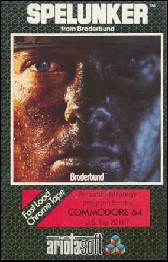

Spelunker
Spelunker is a classic platform video game originally released in 1983. Developed by Tim Martin and MicroGraphicImage, Spelunker challenges players to explore caves, avoid traps, and collect treasures. With its challenging gameplay and atmospheric music, Spelunker has become an iconic title in the history of video games, inspiring numerous sequels and remakes.